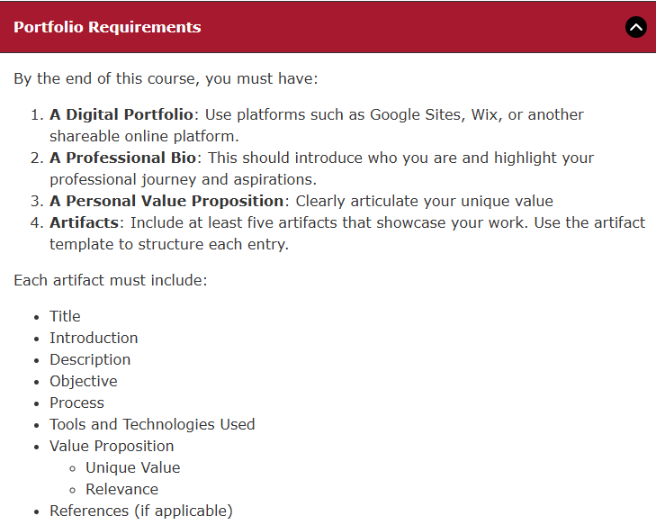

A tiny model you can draw on a napkin — yet powerful enough to headline random forests and gradient boosting.
Each internal node asks a yes-or-no question on one feature. Each branch is an answer. Each leaf is a prediction (a class label in classification, or a number in regression).
Training finds good questions to ask about your inputs — thresholds on numeric features, or branches for categories — so that each leaf ends up with examples that mostly agree on the target label.
Because the path from root to leaf is a list of rules, you can explain a single prediction to a stakeholder without opening a thousand-dimensional weight matrix.
This page is organized to match the program’s digital portfolio requirements: bio and value proposition live on the home page; each artifact includes the sections below in the “About this project” area.

Figure: Portfolio requirements as provided in the course materials.
This matches the toy examples used in intro ML courses (similar spirit to the “play tennis” dataset). Tap Yes or No at each step; the path you take is a branch in a decision tree.
Three nodes deep — then a leaf prediction.
Is it sunny today?
Trees trade some raw accuracy for clarity — and ensembles of trees trade some clarity back for state-of-the-art accuracy.
Understand the single tree first; the forest is just teamwork.
Structured per the course artifact template (title in the hero; remaining items in this grid).